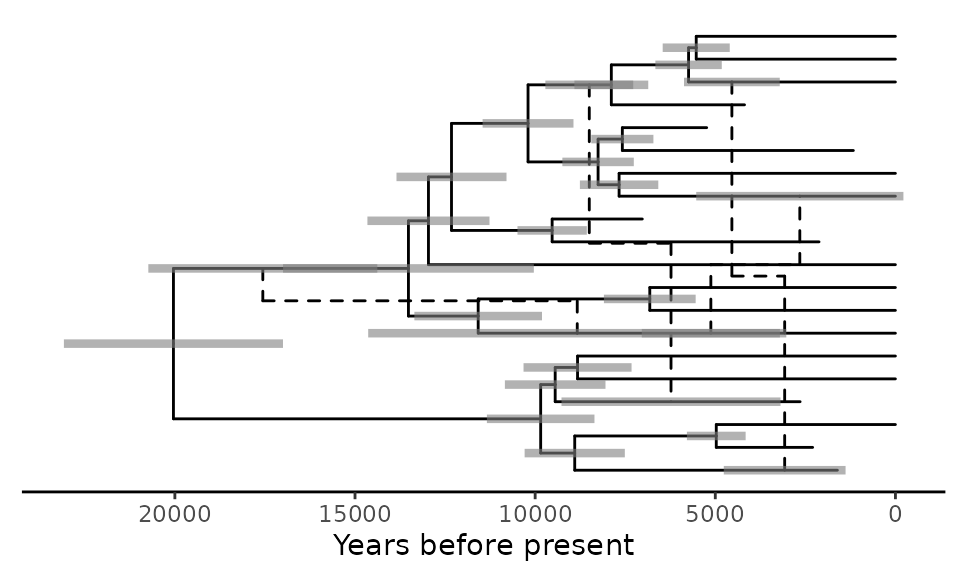

Visualisation of Tree-based Phylogenetic Networks with ggret
Source:vignettes/intro_to_ggret.Rmd
intro_to_ggret.Rmd
ggret is an R package for the visualization of
tree-based phylogenetic networks. Its builds on and extends
ggplot2 and ggtree and aims to be compatible
with these packages. For more details about ggtree’s
functionalities, please see the ggtree vignette here: https://yulab-smu.top/treedata-book/
Installation
As a first step, we recommend getting ggplot2 from CRAN
and ggtree from Bioconductor if you haven’t done this
previously. The ggret package is available via GitHub and
can be installed with the remotes package.
# Install ggplot2
install.packages("ggplot2")
# Install ggtree
if (!require("BiocManager", quietly = TRUE))
install.packages("BiocManager")
BiocManager::install("ggtree")
# Install ggret
if (!requireNamespace("remotes", quietly = TRUE))
install.packages("remotes")
remotes::install_github("grdspcht/ggret", dependencies = TRUE, build_vignettes = TRUE)Parsing network formats
ggret provides parsing functions building upon
ape::read.tree and treeio::read.beast for
reading extended Newick and BEAST2 NEXUS files with network blocks. The
input data is stored in evonet or treedata
objects and can be used for plotting and further analysis.
library(ggret)
#read_enewick parses extended Newick format and generates an evonet object.
retfile_nwk <- system.file("extdata" , "retnet.nwk", package = "ggret", mustWork = TRUE)
retnet_evonet <- ggret::read_enewick(retfile_nwk)
#read_beast_retnet parses BEAST2 NEXUS files and generates a treedata object.
retfile_nexus <- system.file("extdata" , "retnet.nexus", package = "ggret", mustWork = TRUE)
retnet_treedata <- ggret::read_beast_retnet(retfile_nexus)For the next step of the tutorial, we will instead use the
retnet_treedata object which also comes with this package.
It is a treedata object corresponding to a (summary)
phylogenetic network simulated with the BEAST2 package Bacter containing various
node metadata.
Plotting a basic phylogenetic network
ggret is the central function of this package. In a
simple call without additional arguments it only plots a visual
representation of the phylogenetic network.
We first use the original ggtree function to plot the
backbone tree of the retnet object
ggtree::ggtree(retnet_evonet)We now plot the entire network, including reticulation edges, using
the ggret function.
ggret::ggret(retnet_evonet)Changing the aspect of reticulation edges
The ggret functions can take different arguments to
change the aspect of reticulation edges.
# Reticulation edges displayed as red dotted lines, in a "snake" shape
p1 <- ggret::ggret(retnet_evonet, retcol = "red", retlinetype = 3)
# Reticulation edges displayed as blue solid lines, in a straight shape and with arrow heads
p2 <- ggret::ggret(retnet_evonet, retcol = "blue", retlinetype = 1, arrows = T, rettype = "straight")
# Plot
plot(p1)
plot(p2)Annotating a phylogenetic network
Adding geom_tiplab and geom_nodelab from
ggtree to our previous call allows us to annotate the
network with metadata that is stored in the retnet
object.
Here is an example to add tip labels and posterior support values at the nodes. Note that we have to expand the x axis limits to make the tip labels visible.
ggret::ggret(retnet_treedata) +
ggtree::geom_tiplab() +
ggtree::geom_nodelab(aes(label = round(posterior,2)), vjust = -0.25, hjust = 1.2, size = 3) +
ggplot2::expand_limits(x = 23000)Here is another example in which we add a time axis to the plot, as
well as the node heights’ 95% highest posterior density intervals
represented by bars. This example requires the phytools
package.
# Get the tMRCA of the tree and define time points to display in the time axis in years BP
library(phytools)
tmrca <- phytools::nodeHeights(retnet_treedata@phylo) %>% max
xticks_BP <- c(20000,15000,10000,5000,0)
# Plot the network
ggret::ggret(retnet_treedata) +
ggtree::theme_tree2() +
ggtree::geom_range(aes(range = "height_95_HPD"), color = "grey50", alpha = .6, size = 1.5) +
ggplot2::scale_x_continuous(breaks = tmrca - xticks_BP, labels = xticks_BP) +
ggplot2::xlab("Years before present")
Adding color to your network
With group_clade we can define clades within our network
and then use aes to color them accordingly.
group_clade assigns clade information to all nodes
descending from the MRCA of tips specified in the nodes
argument. The value taken is specified in the cladename
argument and is added as a clade attribute in the evonet
object and, in addition, as a Clade column in the data
component of tree data objects if the addtotreedata
argument is set to true.
# Define clades using the group_clade function
retnet_treedata %>%
ggret::group_clade(nodes = c("taxon_10", "taxon_20"), cladename = "A", addtotreedata = T) %>%
ggret::group_clade(nodes = c("taxon_11", "taxon_15"), cladename = "B", addtotreedata = T) %>%
ggret::group_clade(nodes = c("taxon_1", "taxon_16"), cladename = "C", addtotreedata = T) ->
retnet_clade
# Plot network with colored clades
ggret::ggret(retnet_clade, aes(color = Clade))Citations
If you use ggret, please cite the associated publication
as well as the original ggtree publication:
- ggret publication to be added
- G Yu, DK Smith, H Zhu, Y Guan, TTY Lam*. ggtree: an R package for visualization and annotation of phylogenetic trees with their covariates and other associated data. Methods in Ecology and Evolution. 2017, 8(1):28-36. doi: 10.1111/2041-210X.12628.
Further Reading
Don’t forget to check ggret’s documentation for further info on functions.
For further information on expanding your plots, please refer to the extensive ggtree manual or the ggplot2 documentation.